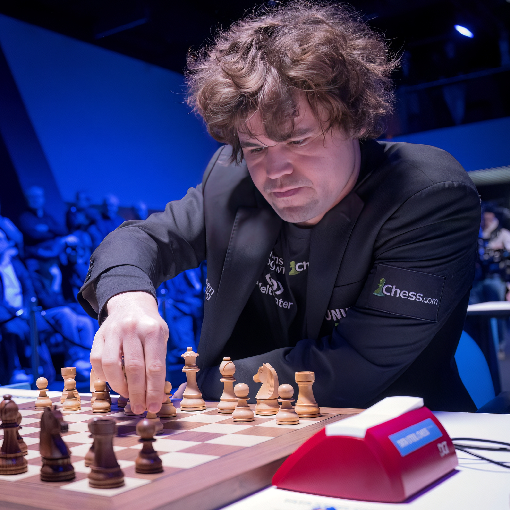
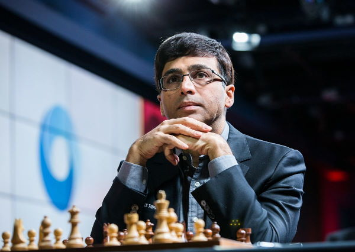

Історія шахів налічує не менше як півтори тисячі років, а можливо й більше.
Винайдені в Індії в V—VI столітті, шахи поширилися практично по всьому світі, ставши невід'ємною частиною людської культури.
Уже в V—VI століттях в Індії була відома гра чатуранґа, яку вважають предком шахів.
Гра в шахи не є складною, проте потребує уваги. Оскільки при неуважості суперник легко поставить вам Мат. Мат у шахах - це кінець гри, коли король команди за яку граєте ви або король суперника невзмозі ходити.
Більш детальніше можна ознайомитись:
тут.
Magnus Carlesn(Магнус Карлсен)
Магнус Карлсен неймовірно обдарований шахматист. Брав чемпіона світу з шахів 6 разів.
Ding Liren(Дін Ліжень)
Дін Ліжень молодий, розумний, перспективний шахматист. Брав чемпіона світу з шахів 5 разів.

Viswanathan Anand(Вішванатан Ананд)
Вішванатан Ананд багатьма недооцінений шахматист, який змушує затягнути партію на декілька годин, оскільки не кожен може подолати такого суперника. Брав чемпіона світу з шахів 5 разів.
